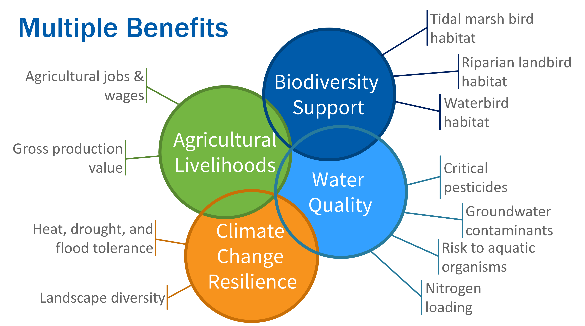
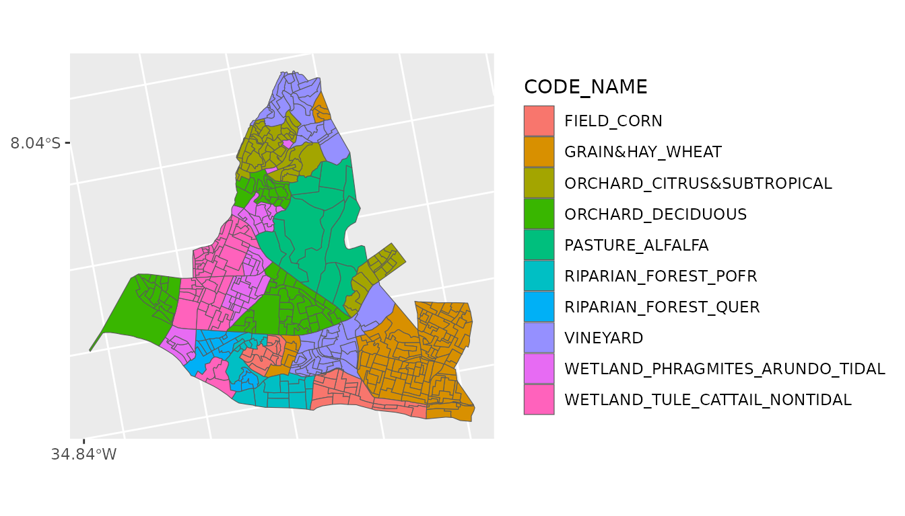
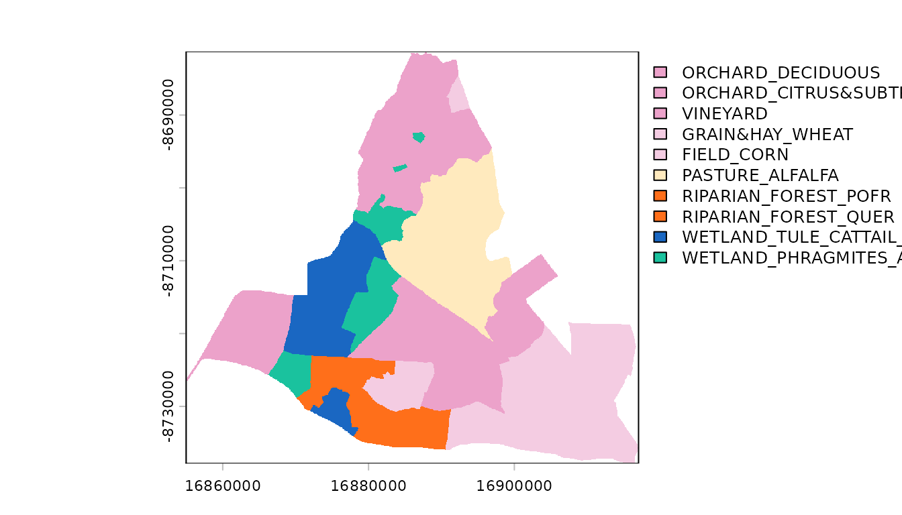
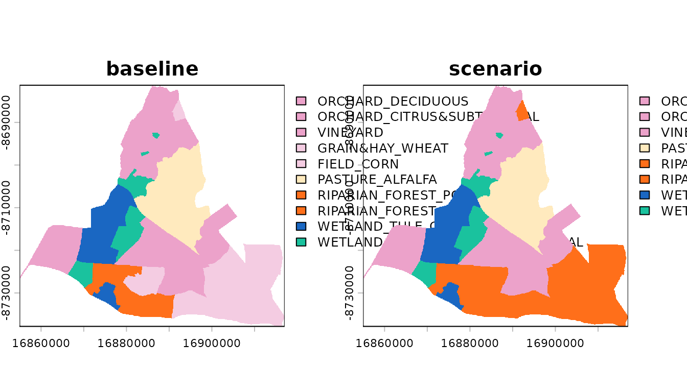
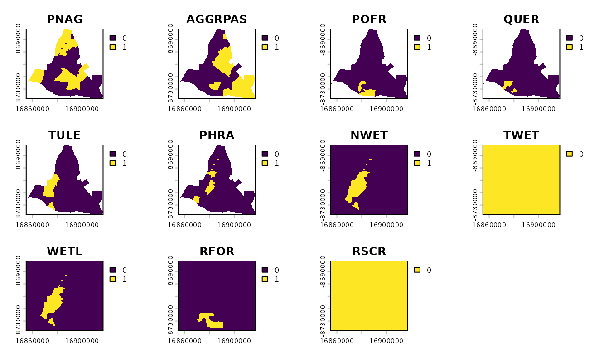
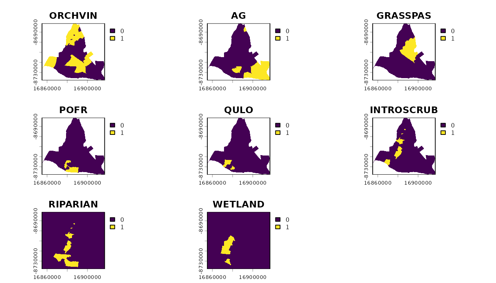

Introduction
The DeltaMultipleBenefits package provides tools for estimating the net impacts of landscape changes in the Sacramento-San Joaquin River Delta on multiple metrics of interest to the Delta community. It provides models and data to support estimating the magnitude of potential multiple benefits and trade-offs resulting from changes to a baseline landscape. It can be used to estimate the effects of a proposed change to the landscape (e.g., habitat restoration plans) or anticipated changes to the landscape (e.g., agricultural crop conversion trends), individually or in combination with each other. It can be used to investigate the complex interactions among multiple drivers of landscape change and to facilitate discussions about alternative scenarios under consideration.
The metrics currently supported by this package are grouped into several categories of potential benefits: Agricultural Livelihoods, Water Quality, Climate Change Resilience, and Biodiversity Support. Each category is represented by multiple individual metrics that can be summarized over the entire landscape, regions within the landscape, or individual project areas. By comparing metrics estimated from proposed scenarios of landscape change to metrics estimated for a baseline landscape representing current conditions, the expected net change in each metric can be estimated.

Importantly, this package is not designed to find an “optimal” solution to maximize benefits and minimize trade-offs, but rather to evaluate and compare realistic proposed alternatives or anticipated future changes. This is because the list of supported metrics is incomplete compared to the many interests, values, and goals held by the Delta community, land managers, organizations, and agencies, so that any optimized solution would be incomplete and potentially misleading. Instead, this package requires users to supply spatial data representing their baseline (current) landscape and alternative scenarios under consideration. Example baseline and scenario landscapes used in the development of this package are publicly available for reuse or modification (see Supporting Information).
This vignette serves as a tutorial outlining the major steps of analyzing alternative landscapes and comparing them to each other, including:
- Preparing new landscape scenarios for analysis
- Summarizing the net change in the total area of each land cover class
- Estimating the net change in simple metrics
- Estimating the net change in metrics informed by spatial models
library(DeltaMultipleBenefits)
# library(sf)
# library(terra)
# library(dplyr)
# library(tidyr)
# library(ggplot2)
# library(tibble)Step 1. Preparing a new landscape scenario for analysis
To prepare a new landscape scenario for analysis with the DeltaMultipleBenefits framework, its land cover classifications must first be aligned with those used in the framework, which are designed to work with the existing metrics and species distribution models. This land cover classification scheme includes both natural and agricultural land cover classes, and is organized hierarchically into major land cover classes and subclasses. Following Phase 2 of developing this package, we substantially updated the vegetation key to accommodate many more wetland vegetation suclasses.
data(key, package = 'DeltaMultipleBenefits')
head(key)
#> # A tibble: 6 × 7
#> CODE_NUM CODE_NAME CLASS SUBCLASS DETAIL LABEL COLOR
#> <dbl> <chr> <chr> <chr> <chr> <chr> <chr>
#> 1 10 AG_PERENNIAL PERENNIAL CRO… NA NA Pere… #ECA…
#> 2 11 ORCHARD_DECIDUOUS NA DECIDUO… NA Orch… #ECA…
#> 3 15 ORCHARD_CITRUS&SUBTROPICAL NA CITRUS … NA Orch… #ECA…
#> 4 19 VINEYARD NA VINEYARD NA Vine… #ECA…
#> 5 20 AG_ANNUAL ANNUAL CROPS NA NA Annu… #F4C…
#> 6 21 GRAIN&HAY NA GRAIN &… NA Grai… #F4C…We generally recommend assigning all land covers in your landscape scenario to the most specific subclass in the existing scheme as possible. Certain metrics and species distribution models will use individual subclasses, while others will lump them together into broader groupings.
1.1 Working with polygons
The most recent, comprehensive land cover and land use data set for
the Delta and Suisun Marsh that we are aware of is the
“Habitat_types_modern” provided in SFEI’s Landscape Scenario Planning
Tool v.3.0.0. To support alignment with this data set and its land cover
classification scheme, we developed the
classify_landcover.sf() function to support cross-walking
that layer to the land cover classes and subclasses required by the
models and metrics in this package. The result of this function is the
additon of fields representing the most detailed land cover class or
subclass that can be assigned according to the scheme provided in
key, as well as the corresponding predictors required to
fit the species distribution models supported by this package.
# EXAMPLE NOT RUN:
lspt <- sf::read_sf('path/to/Habitat_types_modern.shp')
lc_classified <- classify_landcover.sf(lspt)Alternatively, and to work with other land cover data sources,
manually align land cover classes and subclasses with those provided in
key. As a toy example, and for further demonstrating the
additional steps in this vignette, we’ll work with the
olinda1 dataset provided with the sf package.
This data set includes place names instead of land cover
classifications, but we’ll treat them as though they represented land
covers and recode them to supported CODE_NAME values in the
key. Finally, we’ll join the key data to match
new CODE_NAME values to CODE_BASELINE values
we’ll need later on.
olinda1 <- sf::st_read(system.file("shape/olinda1.shp", package = "sf"),
quiet = TRUE) |>
sf::st_transform(26910)
head(olinda1)
#> Simple feature collection with 6 features and 6 fields
#> Geometry type: POLYGON
#> Dimension: XY
#> Bounding box: xmin: 16885570 ymin: -8723971 xmax: 16892730 ymax: -8717533
#> Projected CRS: NAD83 / UTM zone 10N
#> ID CD_GEOCODI TIPO CD_GEOCODB NM_BAIR V014
#> 1 28801 260960005000001 URBANO 260960005020 Ouro Preto 1119
#> 2 28802 260960005000002 URBANO 260960005020 Ouro Preto 1267
#> 3 28803 260960005000003 URBANO 260960005020 Ouro Preto 557
#> 4 28804 260960005000004 URBANO 260960005020 Ouro Preto 709
#> 5 28805 260960005000005 URBANO 260960005020 Ouro Preto 1045
#> 6 28806 260960005000006 URBANO 260960005020 Ouro Preto 727
#> geometry
#> 1 POLYGON ((16889505 -8717533...
#> 2 POLYGON ((16891561 -8719078...
#> 3 POLYGON ((16890240 -8721218...
#> 4 POLYGON ((16888737 -8722217...
#> 5 POLYGON ((16886823 -8722100...
#> 6 POLYGON ((16887682 -8720990...
new_shp <- olinda1 |>
# recode existing place name values with supported land cover names in key
dplyr::mutate(
CODE_NAME = dplyr::case_when(
NM_BAIR %in% c('Ouro Preto', 'Sítio Novo', 'Sapucaia', 'Salgadinho') ~
'ORCHARD_DECIDUOUS',
NM_BAIR %in% c('Tabajara', "Caixa D'Água", 'Águas Compridas',
'São Benedito') ~
'ORCHARD_CITRUS&SUBTROPICAL',
NM_BAIR %in% c('Fragoso', 'Alto da Bondade', 'Alto da Conquista',
'Passarinho') ~
'VINEYARD',
NM_BAIR %in% c('Bultrins', 'Jardim Atlântico', 'Rio Doce',
'Alto do Sol Nascente') ~
'GRAIN&HAY_WHEAT',
NM_BAIR %in% c('Alto da Nação', 'Monte', 'Casa Caiada') ~
'FIELD_CORN',
NM_BAIR %in% c('Guadalupe', 'Bonsucesso', 'Bairro Novo') ~
'RIPARIAN_FOREST_POFR',
NM_BAIR %in% c('Varadouro', 'Amparo', 'Amaro Branco') ~
'RIPARIAN_FOREST_QUER',
NM_BAIR %in% c('Vila Popular', 'Peixinhos', 'Carmo') ~
'WETLAND_TULE_CATTAIL_NONTIDAL',
NM_BAIR %in% c('Jardim Brasil', 'Aguazinha', 'Santa Teresa') ~
'WETLAND_PHRAGMITES_ARUNDO_TIDAL',
is.na(NM_BAIR) ~ 'PASTURE_ALFALFA',
TRUE ~ 'UNKNOWN')) |>
# transfer CODE_BASELINE values from key
dplyr::left_join(key |> dplyr::select(CODE_NUM, CODE_NAME, COLOR), by = 'CODE_NAME')
ggplot2::ggplot(new_shp) +
ggplot2::geom_sf(ggplot2::aes(fill = CODE_NAME))
Next, convert the polygons to a raster format with the desired projection, extent, and resolution. We’ll first create a raster template from the polygon layer with a small number of columns and rows (and thus coarse resolution) just for demonstration purposes. However, to ensure alignment with other rasters in your analysis, it usually works best to use an existing raster as a template. Next, transfer the land cover code values to the template to create a new landscape raster that we’ll treat as our “baseline” landscape. Finally, to help with plotting, we’ll assign labels and default color codings to each value.
template = terra::rast(ncols = 1000, nrows = 1000,
extent = sf::st_bbox(new_shp))
terra::crs(template) = 'epsg:26910'
baseline = terra::rasterize(x = new_shp, y = template, field = 'CODE_NUM')
names(baseline) = 'baseline'
# assign factor levels:
levels(baseline) <- key |>
dplyr::select(CODE_NUM, CODE_NAME) |> as.data.frame()
# assign color coding
terra::coltab(baseline) <- key |>
dplyr::select(CODE_NUM, COLOR) |> as.data.frame()
terra::plot(baseline)
1.2 Working with existing rasters
If the landscape to be analyzed is in a raster format already, the
existing land cover values encoded should be similarly translated to the
supported values in the existing land cover classification scheme. As an
example, we’ll use baseline raster we created above, and
create a new version from it to serve as our new scenario
of landscape change.
# basic example habitat restoration scenario: all wheat (22) and corn (26)
# pixels are converted to Fremont cottonwood riparian forest (71)
scenario <- terra::classify(
baseline,
rcl = data.frame(from = c(22, 26),
to = c(71, 71)) |> as.matrix())
levels(scenario) <- key |>
dplyr::select(CODE_NUM, CODE_NAME) |> as.data.frame()
terra::coltab(scenario) <- key |>
dplyr::select(CODE_NUM, COLOR) |> as.data.frame()
# stack landscapes to compare
landscapes = c(baseline, scenario)
names(landscapes) = c('baseline', 'scenario')
terra::plot(landscapes) 
# Note the light pink wheat and corn cells have changed to orange-red riparian
# cells
rm(baseline, scenario, olinda1, key)Step 2. Summarizing the net change in the total area of each land cover class
Built-in functions make it simple to estimate the change in the total area of each land cover class between the baseline and one or more scenario landscape rasters. First, sum the total area of each land cover class in each landscape raster, then summarize the change between them.
sum_landcover: This function takes a SpatRaster with
one or more layers and, for each layer, counts the number of pixels of
each unique land cover class and multiplies by the provided
pixel_area value to estimate the total area of each land
cover class. It returns a tibble with the scenario name (taken from the
names of each raster layer), the CODE_NAME of each land
cover class, and the total area. Here we’ll first use
terra::cellSize to estimate the area of each pixel in ha.
The option rollup = TRUE adds extra rows to the output with
the sum total area for all riparian and wetland subclasses. This
function also supports options to mask out portions of the raster and/or
to summarize the total area by zones or regions within the
landscape.
units = 'ha'
area = terra::cellSize(landscapes, unit = units)[50,50] |> tibble::deframe()
landcover_totals = sum_landcover(
landscapes = landscapes,
pixel_area = area,
rollup = TRUE,
zones = NULL) |>
dplyr::arrange(scenario, CODE_NAME) |>
dplyr::mutate(units = units)
head(landcover_totals)sum_change: This function calculates the net change
in the area of each land cover class between the baseline landscape and
one or more scenario landscapes. Note that this function expects the
output from sum_landcover, which includes the field
scenario representing the names of each landscape. At least
one scenario must be named “baseline”, and all other scenarios will be
assumed to represent an alternative scenario landscape for comparison to
the baseline. Thus the net change for multiple scenarios can be
estimated simultaneously. The result is a tibble with the scenario name,
the CODE_NAME of each land cover class, fields representing
the total area of the land cover class for the scenario in question and
the corresponding area for the baseline, and then the
net_change between them, where a positive value indicates
an increase from the baseline.
landcover_change = sum_change(landcover_totals)
head(landcover_change)
# Note net increase in riparian (and specifically POFR) and decrease in wheat and corn, as expected.Step 3. Estimating the net change in simple metrics
The DeltaMultipleBenefits package supports evaluation of
several relatively “simple” metrics representing the benefits
categories: agricultural livelihoods, water quality,
and climate change resilience. For example, agricultural
livelihood metrics include the number of agricultural jobs, their
average annual wage, and gross production value. These are all “simple”
metrics in the sense that a single mean value for each metric is used to
represent each land cover class, regardless of where in the Delta the
land cover is located. Therefore, estimating the net change in these
metrics between a baseline and scenario landscape is relatively simple
compared to estimating the net change in metrics derived from a spatial
model (see below). The steps for estimating the net change in these
simple metrics are similar to estimating the net change in land cover
area above. However, the uncertainty in the value of each metric for
each land cover class (where available) is also accounted for in
estimating the uncertainty in the net change.
The values assigned to each land cover class for each metric are included in this package, and are also published and available to download separately (see Supporting Information). However, these metrics can be edited to provide updated values or custom additional metrics as needed.
sum_metrics: First estimate the total landscape
score for each metric and landscape raster, by combining total area of
each land cover class estimated above with the per-unit-area metrics for
each land cover class. For most metrics, this involves multiplying the
per-unit-area metrics by the total area of each land cover class and
summing over the entire landscape. For Annual Wages (as part of the
Agricultural Livelihoods category of benefits), it instead calculates
the new weighted average wage across all agricultural hectares (i.e.,
those supporting agricultural jobs with an associated wage value). For
metrics in the Climate Change Resilience category, it instead calculates
the new overall average resilience score on a scale of 1 (low
resilience) to 10 (high resilience). The function returns a tibble with
the scenario name, fields from metrics defining metric
categories and units, a SCORE_TOTAL and a
SCORE_TOTAL_SE, representing the combined uncertainty. The
units field is also updated to reflect that the scores are
no longer per-hectare, but instead summed over all hectares in the
landscape.
The total area of each land cover class as calculated above includes
both the area of individual riparian and managed wetland subclasses as
well as the roll-up total area (because we used
rollup = TRUE), so we must take care not to double-count
them in the total landscape scores calcualted here. Thus far, these
simple metrics are not specific to individual riparian and
wetland subclasses and instead apply to riparian and wetland land covers
generally. Therefore, here we filter out the subclasses to exclude them
from this calculation.
Note: We will get a warning message here, because our toy example landscape does not include all land cover classes present in our metrics data.
scores = sum_metrics(
metricdat = metrics,
areadat = landcover_totals |> dplyr::filter(!(grepl('RIPARIAN_|WETLAND_', CODE_NAME))))
head(scores)sum_change: Then, we can again use
sum_change to estimate the difference in each metric
between the baseline and scenario landscapes. However, this time because
there is uncertainty in the total landscape scores, the uncertainty in
the difference will also be estimated. Here we use a coverage factor
k = 2 to approximate a 95% confidence interval for the
net_change.
scores_change = sum_change(scores, k = 2)
head(scores_change)Visualize the resulting estimates of net change: (Note no error bar for N loading due to lack of uncertainty estimates)
scores_change |>
dplyr::mutate(
# invert water quality scores so a reduction in pesticide use is shown as a
# net benefit
net_change = dplyr::if_else(
METRIC_CATEGORY == 'Water Quality', -1 * net_change, net_change),
# rescale scores and confidence intervals with very large numbers to facilitate
# comparisons
dplyr::across(
c(net_change, lcl, ucl),
~dplyr::case_when(
METRIC == 'Gross Production Value' ~ .x/1000,
METRIC == 'N loading' ~ .x/1000,
TRUE ~ .x))
) |>
ggplot2::ggplot(ggplot2::aes(net_change, METRIC)) +
ggplot2::facet_wrap(~METRIC_CATEGORY, ncol = 1, scales = 'free') +
ggplot2::geom_col(fill = 'gray80') +
ggplot2::geom_errorbar(ggplot2::aes(xmin = lcl, xmax = ucl), width = 0.25) +
# add blank geoms to ensure zeroes line up across facets
ggplot2::geom_blank(ggplot2::aes(x = -ucl)) +
ggplot2::geom_blank(ggplot2::aes(x = -lcl)) +
ggplot2::theme_minimal()Step 4. Estimating the net change in metrics informed by spatial models
In addition to the “simple” metrics described above, the
DeltaMultipleBenefits package supports evaluation of more
complex spatial models that consider not only the total extent of each
land cover class in the landscape but also their spatial configuration.
For example, whether or not an area is suitable habitat for wildlife
species often depends on both the local land cover class as well as the
surrounding land cover classes and proximity to specific features on the
landscape (such as distance to a water channel). Evaluating the net
change in these metrics between scenario and baseline landscapes is
necessarily more complicated than evaluating the “simple” metrics above,
but also allows for more nuance and spatial variation within the
landscape.
The package currently supports application of several species distribution models for birds to represent the Biodiversity Support benefits category, with metrics that represent the estimated extent of suitable habitat for each species or group of species. These include 3 sets of models: * “riparian”: 9 riparian landbird species during the breeding season * “waterbird_fall”: 6 groups of waterbird species during the fall season * “waterbird_win”: 6 groups of waterbird species during the winter season * “tima”: 7 tidal marsh bird species, including 3 secretive marsh bird species and 4 tidal wetland songbird species
See Supporting Information for links to manuscripts and reports describing the development of these models and links to download the R data files containing these models (they are not provided within the R package due to their size).
Spatial models for other species, other benefits categories and metrics, and/or to represent the “simple” metrics in a more nuanced, spatially-dependent way could be incorporated in future versions of this package. Please contact us to suggest future extensions of this package and to collaborate on further development.
All of these species distribution models include predictors representing local land cover statistics (e.g., proportion cover within 100m) and predictors representing the surrounding landscape (e.g., proportion cover within 2km). However, the land cover classes and subclasses most relevant to each group of species vary, while other land cover classes may be lumped together into a single predictor. Therefore, to apply these species distribution models to new baseline and scenario landscapes, the land cover classes must be first cross-walked to the relevant predictors for each set of models. Then, focal statistics must be run using the moving window sizes relevant to each set of models. Finally, additional predictors specific to individual sets of models may also need updating. Here, we walk through the key steps necessary for each set of models.
4.1 Tidal marsh bird models (“tima”)
The models developed in Phase 2 include 7 tidal wetland focal species: 3 secretive marsh bird species (California Black Rail, American Bittern, and Least Bittern), as well as 4 tidal marsh songbird species (Common Yellowthroat, Marsh Wren, Song Sparrow, and Yellow-breasted Chat).
4.1.1 Prepare landscape predictors
To apply the “tima” models to new baseline and scenario landscapes, first use built-in functions to prepare the landscape rasters.
classify_landcover.SpatRaster: The first step is to reclassify each landscape raster to match the predictor groupings required by the “tima” models.
We also need to compile additional predictors from other data
sources: * CHAN, the density of channel lines within each
buffer distance, based on the National Hydrography Dataset *
PSIZE, the patch size of the largest block of tidal
wetlands that extends into the buffer size
landscapes_tima = classify_landcover(landscapes, SDM = 'tima')
#> RICE URBN NA SALF MIXF INTR SALS MIXS WETLAND VERP WATER WOODY BARREN RIPARIAN NWET SALTPICK EMER MEAD LEPI ALKA TWET
#> Warning in classify_landcover.SpatRaster(landscapes, SDM = "tima"): Extreme
#> Caution Advised. Land cover classes are missing from the input raster but are
#> expected by the selected SDM. Check input raster for errors.python_focal_prep: The next step separates each
landscape raster into separate layers for each distinct predictor, with
a default value of 1 everywhere the land cover class is
present, and a 0 otherwise. The result can be optionally
directly written to a directory located at:
dir/SDM/landscape_name where landscape_name is
taken from the name(s) of the input SpatRaster. If the directory does
not already exist, it will be created automatically. Here, we just
return the results to working memory instead.
Note: We will get warning messages here, because our toy example landscape does not include all land cover classes required to fit the “tima” models.
predictors_tima = python_focal_prep(landscapes_tima, SDM = 'tima',
fill = FALSE) |> suppressWarnings()
#> RICE URBN SALF MIXF INTR SALS MIXS WETLAND VERP WATER WOODY BARREN RIPARIAN SALTPICK EMER MEAD LEPI ALKARICE URBN SALF MIXF INTR SALS MIXS WETLAND VERP WATER WOODY BARREN RIPARIAN SALTPICK EMER MEAD LEPI ALKA
terra::plot(predictors_tima$baseline)
# Optional (slow)
# python_focal_prep(landscapes_tima, SDM = 'tima',
# dir = 'SDM_landcover2', fill = FALSE, overwrite = TRUE)
# >> when run inside vignette, output will write to vignettes/SDM_landcoverpython_focal_stats: The third step is to generate
focal statistics for each of the separate land cover rasters generated
in the previous step. Focal statistics perform a given operation on all
cells within a given distance of the focal cell, and repeated for every
cell in the raster. For the “tima” models, this function will calculate
the mean value for the presence of every land cover class within each
landscape to be analyzed, within moving windows on each of two spatial
scales (50m and 2km). All input layers are read from
pathin/SDM/landscape_name, processed, and then written out
to dir/SDM/landscape_name/scale.
These calculations can be very slow, depending on the size and
resolution of the rasters. While they could be run entirely in R, it is
much faster to use Python and write directly to disk rather than store
in working memory. Therefore, this function currently requires Python to
be installed on your system and specifically arcpy with the
Spatial Analyst extension. The first time this function is run in each
session, internal helper functions will check that arcpy is
installed and try to load it, but to ensure the correct version of
Python can be found, you may need to specify the correct filepath. See
example below.
Because these calculations are slow, a regex argument
provides options for re-running this code for only a subset of the
predictors in pathin/SDM/landscape_name.
python_focal_stats(SDM = 'tima',
landscape_names = c('baseline', 'scenario'),
pathin = 'SDM_landcover2',
dir = 'SDM_predictors')
# #small test of just one landscape and predictor: (will still run both scales)
# python_focal_stats(SDM = 'tima',
# landscape_names = 'baseline',
# pathin = 'SDM_landcover2',
# dir = 'SDM_predictors', regex = 'PNAG.tif')update_covertype: Finally, covertype is a categorical predictor reflecting the land cover class in each pixel. The original bird survey data used to develop these models only included a subset of available land cover classes, and these classes had an influence on the probability of species presence: wetland, riparian, water, and a combined group of annual agricultural crops, idle fields, grassland, and ruderal (non-woody) vegetation. This function extracts these landcovers from the input SpatRasters and creates a “LANDCOVER.tif” layer ready to use in the distribution models.
covertype_tima = update_covertype(landscapes_tima, SDM = "tima")
terra::plot(covertype_tima)4.1.3 Generate model predictions
fit_SDM: Use the predictors created in the previous
step for each landscape to fit the distribution models for each of the 7
“tima” species. The modlist should refer to an R object
containing a list of the tidal marsh distribution models. See Supporting Information
to download these models. The levels of the categorical predictor
LANDCOVER must be specified in the call to
fit_SDM, and in the correct order.
Open water was considered to be an unsuitable land cover class a
priori, and so we can specify unsuitable = 90 (the
land cover class value for open water); this will create a mask from the
provided landscape with 0 values wherever the land cover
class equals the values provided in unsuitable and NA
elsewhere, used to cover the predicted values from the model.
Alternatively, the predictors can all be masked by an open water layer
before running fit_SDM().
fit_SDM(pathin = 'SDM_predictors',
SDM = 'tima',
landscape_name = 'baseline',
modlist = BRT_tidal_wetlands,
factors = list(list('LANDCOVER' = c('WETLAND', 'RIPARIAN', 'WATER', 'AGGRPAS'))),
type = 'response',
unsuitable = 90,
dir = 'SDM_results')
fit_SDM(pathin = 'SDM_predictors',
SDM = 'tima',
landscape_name = 'scenario',
modlist = BRT_tidal_wetlands,
factors = list(list('LANDCOVER' = c('WETLAND', 'RIPARIAN', 'WATER', 'AGGRPAS'))),
type = 'response',
dir = 'SDM_results')Note: The models will not run if all required predictors are not provided. The toy example landscape data provided here does not include all required predictors.
transform_SDM: The model-predicted results can be
converted into binary presence-absence predictions using threshold
statistics derived from the dismo::threshold function.
Here, we use the statistic equal_sens_spec, which is the
value at which specificity (the probability of correctly predicting
species absence) is equal to sensitivity (the probability of correctly
predicting species presence), but other statistics can be selected (see
?dismo::threshold).
transform_SDM(pathin = 'SDM_results',
SDM = 'tima', landscape_name = 'baseline',
modlist = BRT_tidal_wetlands,
stat = 'equal_sens_spec',
dir = 'SDM_results_threshold')
transform_SDM(pathin = 'SDM_results',
SDM = 'tima', landscape_name = 'scenario',
modlist = BRT_tidal_wetlands,
stat = 'equal_sens_spec',
dir = 'SDM_results_threshold')4.2 Riparian landbird models (“riparian”)
The models developed in Phase 1 include 9 riparian landbird species, including 3 of the same species also addressed in Phase 2 for tidal wetlands: Common Yellowthroat, Marsh Wren, Song Sparrow, and Yellow-breasted Chat, as well as: Nuttall’s Woodpecker, Ash-throated Flycatcher, Black-headed Grosbeak, Lazuli Bunting, Yellow Warbler, and Spotted Towhee. These models were built for the entire Central Valley and focused on riparian vegetation and did not include as much wetland vegetation detail as the Phase 2 models. Thus, we now recommend using the Phase 2 models for those species, and Phase 1 models for the rest.
4.2.1 Prepare landscape predictors
To apply the “riparian” models to new baseline and scenario landscapes, the process is very similar to that for “tima” demonstrated above, with a few exceptions.
classify_landcover: The first step is again to
create the predictor groupings required by the “riparian” models, but
here it is best to work directly with the original LSPT
Habitat_types_modern layer, if possible. The
classify_landcover.sf() function applied to the LSPT data
will return the corresponding predictors for the “riparian” models with
the greatest accuracy and specificity. As an example:
lspt <- sf::read_sf('path/to/Habitat_types_modern.shp')
lc_classified <- classify_landcover.sf(lspt)
baseline_rip = terra::rasterize(x = lc_classified, y = template,
field = 'PREDICTOR_RIPARIAN')
scenario_rip <- terra::classify(
baseline_rip,
rcl = data.frame(from = c(22, 26),
to = c(71, 71)) |> as.matrix())
landscapes_rip = c(baseline_rip, scenario_rip)
names(landscapes_rip) = c('baseline', 'scenario')Otherwise, classify_landcover.SpatRaster() can be used,
but may produce some minor differences from the original land cover
classification scheme used in the development of these models.
python_focal_prep: Following the classification step, the next step is again to prep for running focal statistics, as above.
landscapes_rip = classify_landcover(landscapes, SDM = 'riparian')
#> RICE IDLE URBAN RIPARIAN SALIX MIXEDFOREST SALIXSHRUB MIXEDSHRUB PERM WATER BARREN WOODLAND&SCRUB
#> Warning in classify_landcover.SpatRaster(landscapes, SDM = "riparian"): Extreme
#> Caution Advised. Land cover classes are missing from the input raster but are
#> expected by the selected SDM. Check input raster for errors.
predictors_rip = python_focal_prep(landscapes_rip, SDM = 'riparian',
fill = FALSE) |>
suppressWarnings()
#> RICE IDLE URBAN SALIX MIXEDFOREST SALIXSHRUB MIXEDSHRUB PERM WATER BARREN WOODLAND&SCRUBAG RICE IDLE URBAN SALIX MIXEDFOREST SALIXSHRUB MIXEDSHRUB PERM WATER BARREN WOODLAND&SCRUB
terra::plot(predictors_rip$baseline)
# Optional (can be slow)
# python_focal_prep(landscapes_rip$baseline, SDM = 'riparian',
# dir = 'SDM_landcover2', fill = FALSE, overwrite = TRUE)
# >> when run inside vignette, output will write to vignettes/SDM_landcoverpython_focal_stats: As above, the next step is to generate focal statistics for each of the separate land cover rasters.
python_focal_stats(SDM = 'riparian',
landscape_names = c('baseline', 'scenario'),
pathin = 'SDM_landcover2',
dir = 'SDM_predictors')
#small test of just one landscape and predictor: (will still run both scales)
# python_focal_stats(SDM = 'riparian',
# landscape_names = 'baseline',
# pathin = 'SDM_landcover2',
# dir = 'SDM_predictors', regex = 'RIPARIAN.tif')###4.2.2 Prepare additional predictors The “riparian” models also
include several predictors not based on land cover data: *
area.ha, accounting for variation in survey effort, which
should be held constant for new predictions; * region,
indicating whether the survey was conducted in the Sacramento Valley
(region = 0) or in the Delta or San Joaquin (region = 1) *
bio_1, representing annual mean temperature, 1970-2000 *
bio_12, representing total annual precipitation, 1970-2000
* streamdist, representing the square-root of the distance
(in m) to the nearest stream or river, based on the National Hydrography
Dataset
To represent area.ha in new predictions, we recommend
using a constant value of 3.14159, referring to the total area (in
hectares) within 50m of a bird survey location, after 4 surveys. For
region, we recommend using a constant value of 1 for
predictions in the Delta. These constant values can be called directly
in the fit_SDM() function below.
For bio_1, bio_12, and
streamdist, see Supporting Information
to download the original layers used in developing these models. They
can be added directly to the same directory containing the land cover
predictors for use in fitting the SDMs, though they may need to be
cropped and aligned with the other rasters first.
4.2.3 Generate model predictions
fit_SDM: Once all required predictors are
represented, the next step is to fit the distribution models for each of
the 9 “riparian” species. Alternatively, only include the 6 species not
already represented by the “tima” models. As above, see Supporting Information
to download these models. Note that, in the original analysis open water
was considered to be an unsuitable land cover class for riparian
landbirds a priori, and so we can specify
unsuitable = 90 (the land cover class value for open
water); this will create a mask from the provided landscape
with 0 values wherever the land cover class equals the values provided
in unsuitable and NA elsewhere, used to cover the predicted
values from the model.
transform_SDM: Finally, as above, the model-predicted results can be converted into binary presence-absence predictions using threshold statistics.
# baseline landscape:
fit_SDM(pathin = 'SDM_predictors',
SDM = 'riparian',
landscape_name = 'baseline',
modlist = BRT_riparian_wetlands[[c('NUWO', 'ATFL', 'BHGR', 'LAZB', 'SPTO', 'YEWA')]],
constants = data.frame(region = 1,
area.ha = 3.141593),
unsuitable = 90, #open water
dir = 'SDM_results')
transform_SDM(pathin = 'SDM_results',
SDM = 'riparian', landscape_name = 'baseline',
modlist = BRT_riparian_wetlands[[c('NUWO', 'ATFL', 'BHGR', 'LAZB', 'SPTO', 'YEWA')]],
stat = 'equal_sens_spec',
dir = 'SDM_results_threshold')
# scenario landscape:
fit_SDM(pathin = 'SDM_predictors',
SDM = 'riparian',
landscape_name = 'scenario',
modlist = BRT_riparian_wetlands[[c('NUWO', 'ATFL', 'BHGR', 'LAZB', 'SPTO', 'YEWA')]],
constants = data.frame(region = 1,
area.ha = 3.141593),
unsuitable = 90, #open water
dir = 'SDM_results')
transform_SDM(pathin = 'SDM_results',
SDM = 'tima', landscape_name = 'scenario',
modlist = BRT_riparian_wetlands[[c('NUWO', 'ATFL', 'BHGR', 'LAZB', 'SPTO', 'YEWA')]],
stat = 'equal_sens_spec',
dir = 'SDM_results_threshold')4.3 Waterbird models (“waterbird_fall” and “waterbird_win”)
The models developed in Phase 1 also include 5 groups of waterbird species during the fall season (July - mid-Nov) and 6 groups during the winter (mid-Nov - Mar): geese, dabbling ducks, diving ducks (winter only), cranes, shorebirds, and herons/egrets. The two seasons represent the changes in species abundance during the non-breeding season as well as changes in land cover, especially specific crop classes in areas where there is a distinct winter crop. Therefore, fitting these models requires season-specific baseline and scenario landscapes.
4.3.1 Generate updated landscape data
To apply the “waterbird_fall” and “waterbird_win” models to new baseline and scenario landscapes, additional predictors corresponding to land cover data must first be generated.
update_pwater: The waterbird distribution models
included pwater, a predictor indicating the proportion of
each land cover class that was flooded during each season. For
prediction purposes, this function uses historical flooding data to
estimate average flooding probability by land cover class to assign a
value to scenario landscapes with changed land cover classes. See Supporting Information
to download the original historical flooding data used in developing
these models; substantial changes in land cover or flooding patterns may
require updating to more current flooding data. Here, for illustration
purposes, we randomly generate an example baseline pwater
and then use the function to create an updated pwater layer
for our example scenario.
pwater_base_fall = terra::rast(
landscapes$baseline,
vals = runif(terra::ncell(landscapes$baseline), min = 0, max = 1))
pwater_base_win = terra::rast(
landscapes$baseline,
vals = runif(terra::ncell(landscapes$baseline), min = 0, max = 1))
update_pwater(waterdat = pwater_base_fall, SDM = 'waterbird_fall',
landscape_name = 'scenario',
dir = 'SDM_predictors', overwrite = TRUE,
baseline_landscape = landscapes$baseline, floor = FALSE)
update_pwater(waterdat = pwater_base_win, SDM = 'waterbird_win',
landscape_name = 'scenario',
dir = 'SDM_predictors', overwrite = TRUE,
baseline_landscape = landscapes$baseline, floor = FALSE)
# waterbird_fall
pwater_scenario_fall = list.files('SDM_predictors/waterbird_fall/scenario',
'pwater.tif$', full.names = TRUE) |> terra::rast()
pwater_scenario_win = list.files('SDM_predictors/waterbird_win/scenario',
'pwater.tif$', full.names = TRUE) |> terra::rast()update_roosts & python_dist: In addition to changes in the probability of open water on the landscape, land cover changes may also affect the suitability of traditional night-time crane roosts. Because the distance to roost was an important predictor on the distribution models for cranes, accounting for the loss of traditional roost locations would affect these distances. The original data source for traditional roost locations is included in this package, but could be combined with updated information as it becomes available.
The update_roosts function allows defining which land
cover class codes are incompatible with crane roosts, and the threshold
proportion of the traditional crane roost polygon at which the entire
roost would be considered unsuitable. In our original analyses, we
considered crane roosts to be incompatible with perennial crops, urban
land cover, riparian vegetation, woodland, or scrub, and we assumed once
20% of the roost was covered by unsuitable land covers, the roost
location would be abandoned. The result of update_roosts is
an intermediate file at representing the new assumed locations of
traditional roosts, which is then used as an input to
python_dist for use in updating the estimated distance to
roost predictor for each pixel in the landscape.
Note: The land cover types we have designated as “unsuitable” for use as a crane roost are not expected to vary seasonally, and so we do not need to create separate versions corresponding to fall and winter waterbird SDMs.
data(roosts_original)
update_roosts(
landscape = landscapes$scenario,
landscape_name = 'scenario',
unsuitable = c(11:19, 60, 70:79, 100:120),
proportion = 0.2,
roosts = terra::vect(roosts_original),
dir = 'SDM_predictors/crane_roosts',
overwrite = TRUE)
python_dist(
pathin = 'SDM_predictors/crane_roosts',
landscape_name = 'scenario',
dir = 'SDM_predictors',
SDM = 'waterbird_fall',
filename = 'droost_km.tif',
scale = 'km')4.3.2 Prepare landscape predictors
Once the previous steps are completed, now built-in functions can be used to prepare the landscape rasters.
classify_landcover.SpatRaster: Reclassify each landscape raster to match the predictor groupings required by waterbird models.
Note: If we had changes in crop class between the fall and winter
seasons, we would need to generate a winter version of the
landscapes data to analyze.
python_focal_prep: Following the classification
step, the next step is again to prep for running focal statistics, as
above. This time, cells where each land cover class is present will be
filled with a value corresponding to the area of each pixel, and each
land cover layer will also be used as a mask for the corresponding
updated pwater data, resulting in a second layer for each
land cover class filled with values corresponding to their probability
of being flooded. Thus, two layers are created for each land cover
class, and we provide two custom suffix values to
distinguish them when the files are written to
dir/SDM/landscape_name.
landscapes_watfall = classify_landcover(landscapes, SDM = 'waterbird_fall') |>
suppressWarnings()
landscapes_watwin = classify_landcover(landscapes, SDM = 'waterbird_win') |>
suppressWarnings()
predictors_watfall_base = python_focal_prep(
landscapes_watfall$baseline, SDM = 'waterbird_fall', fill = FALSE,
subset = pwater_base_fall, pixel_value = 0.09, suffix = c('_area', '_pfld')) |>
suppressWarnings()
predictors_watfall_scenario = python_focal_prep(
landscapes_watfall$scenario, SDM = 'waterbird_fall', fill = FALSE,
subset = pwater_scenario_fall, pixel_value = 0.09, suffix = c('_area', '_pfld')) |>
suppressWarnings()
# >> repeat for winter
# Optional (slow)
# python_focal_prep(landscapes_watfall$baseline, SDM = 'waterbird_fall',
# subset = pwater_base_fall, pixel_value = 0.09,
# suffix = c('_area', '_pfld'),
# dir = 'SDM_landcover2', fill = FALSE, overwrite = TRUE)
# >> when run inside vignette, output will write to vignettes/SDM_landcoverpython_focal_stats: As above, the next step is to generate focal statistics for each of the separate land cover rasters.
python_focal_stats(SDM = 'waterbird_fall',
landscape_names = c('baseline', 'scenario'),
pathin = 'SDM_landcover2',
dir = 'SDM_predictors')
#small test of just one landscape and predictor: (will still run all 3 scales
#for both _area and _pfld)
python_focal_stats(SDM = 'waterbird_fall',
landscape_names = 'baseline',
pathin = 'SDM_landcover2',
dir = 'SDM_predictors', regex = 'wet')
# >> in this the regex is pasted to _area.tif and _pfld.tifupdate_covertype: Like the “tima” models, these models include a categorical cover type predictor
covertype_watfall = update_covertype(landscapes_watfall, SDM = "waterbird_fall")
terra::plot(covertype_watfall)
covertype_watwin = update_covertype(landscapes_watwin, SDM = "waterbird_win")
terra::plot(covertype_watwin)4.3.3 Generate model predictions
fit_SDM: Once all required predictors are
represented, the next step is to fit the distribution models for each of
the 5 fall waterbird groups and6 winter waterbird groups. As above, see
Supporting
Information to download these models. And as for “tima” models, the
levels of the categorical predictor covertype must be
specified in the call to fit_SDM, and in the correct order;
note that the factor levels change between fall and winter seasons.
As for the “riparian” models, in the original analysis perennial
crops, urban, and barren land covers were considered to be unsuitable
land cover classes a priori, and so we can specify
unsuitable = c(10:19, 60, 130) (the corresponding land
cover class values).
Also similar to the riparian models, the waterbird models included
offset, a predictor accounting for variation in survey
effort, with different values applied to the predictions for waterbird
groups in fall vs. winter, as well as a separate value for cranes and
geese during the fall (which had a more restricted fall season). Thus,
due to the distinct values for offset, call
fit_SDM three times.
transform_SDM: Finally, as above, the model-predicted results can be converted into binary presence-absence predictions using threshold statistics.
# fall: cranes, geese
purrr::map(names(landscapes),
~fit_SDM(
pathin = 'SDM_predictors',
SDM = 'waterbird_fall',
landscape_name = .x,
modlist = waterbird_mods_fall[c('crane', 'geese')],
constants = data.frame(offset = 3.709),
factors = list(list('covertype' = c('Alfalfa',
'Irrigated pasture',
'Rice',
'Wetland'))),
unsuitable = c(10:19, 60, 130),
landscape = landscapes[[.x]],
dir = 'SDM_results'))
# fall: dblr, shore, cicon:
purrr::map(names(landscapes),
~fit_SDM(
pathin = 'SDM_predictors',
SDM = 'waterbird_fall',
landscape_name = .x,
modlist = waterbird_mods_fall[c('dblr', 'cicon', 'shore')],
constants = data.frame(offset = 4.435),
factors = list(list('covertype' = c('Alfalfa',
'Irrigated pasture',
'Rice',
'Wetland'))),
unsuitable = c(10:19, 60, 130),
landscape = landscapes[[.x]],
dir = 'SDM_results'))
# winter: all
purrr::map(names(landscapes),
~fit_SDM(
pathin = 'SDM_predictors',
SDM = 'waterbird_win',
landscape_name = .x,
modlist = waterbird_mods_win,
constants = data.frame(offset = 3.617),
factors = list(list('covertype' = c('Alfalfa',
'Corn',
'Irrigated pasture',
'Rice',
'Wetland',
'Winter wheat'))),
unsuitable = c(10:19, 60, 130), #perennial crops, urban, barren
landscape = scenarios[[.x]],
dir = 'SDM_results',
overwrite = TRUE))transform_SDM: Again, as with riparian landbirds, convert the continuous probabilities of waterbird group presence predicted in the previous step to binary predictions of presence or absence.
purrr::map(names(landscapes),
~transform_SDM(
pathin = 'SDM_results',
SDM = 'waterbird_fall',
landscape_name = .x,
modlist = BRT_riparian[1],
stat = 'equal_sens_spec',
dir = 'SDM_results_threshold'))
purrr::map(names(landscapes),
~transform_SDM(
pathin = 'SDM_results',
SDM = 'waterbird_win',
landscape_name = .x,
modlist = BRT_riparian[1],
stat = 'equal_sens_spec',
dir = 'SDM_results_threshold'))4.4 Estimate the net change in bird habitat
At this stage, the steps for estimating the net change in the total amount of habitat provided by each scenario for riparian landbirds and waterbird groups is similar to estimating the net change in the area of each land cover class and in each of the “simple metrics” above.
sum_habitat: Estimate the total area of each
landscape each species is predicted to occupy. This function is similar
to sum_landcover, but with a few key differences. By
default, all prediction rasters in the pathin argument and
any subdirectories will be included, so it can handle the results from
multiple scenarios and multiple sets of distribution models
simultaneously. However, SDM or both SDM and
landscape_name can optionally be specified to limit the
predictions evaluated. In addition, by including the option
rollup = TRUE, the total area occupied by at least one
species in the set will also be calculated.
By default, the result is the total count of pixels with a predicted
species presence, but the count can be optionally multiplied by the area
of each pixel by providing a pixel_area value in the
desired units. Here we also added a mutate argument to the
results to clearly specify the units used. Either way, the results are
structured to align with the results of sum_metrics() used
above for summarizing the total landscapes scores for the simple
metrics, so that the habitat totals can be appended to those results,
and the net change can be estimated simultaneously.
habitat_totals = sum_habitat(
pathin = 'SDM_results_threshold',
rollup = TRUE,
pixel_area = 0.09) |>
dplyr::mutate(UNIT = 'ha')sum_change: Again, use this function to estimate the
net change in the total area of the landscape each species is predicted
to occupy, as an indication of the net change in the total area of
suitable habitat for each species. Optionally
habitat_totals can first be appended to scores
above (the result of sum_metrics()) to calculate the net
change across all benefits categories simultaneously and include
biodiversity support in the visualization of the results alongside the
other categories of benefits.
scores_change_habitat = sum_change(habitat_totals)Acknowledgements
This R package was created with funding from the Proposition 1 Delta Water Quality and Ecosystem Restoration Program administered by the California Department of Fish and Wildlife (Grant Agreement Number–Q1996022), and further developed with funding from the Water Quality, Supply, and Infrastructure Improvement Act of 2014 (Proposition 1, CWC § 79707), administered by the California Department of Fish and Wildlife (Grant Agreement Number Q2296017).